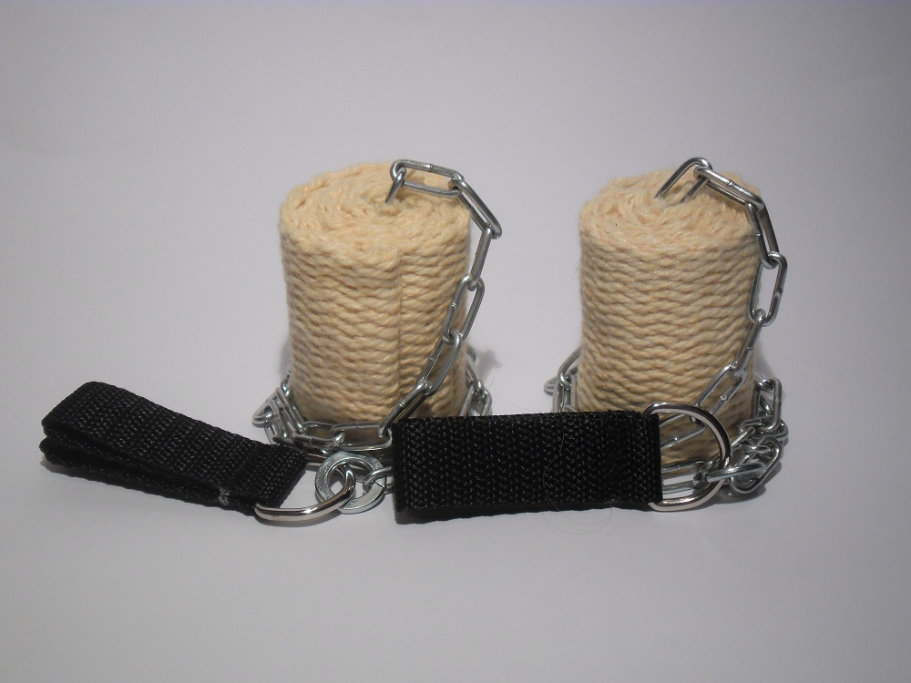
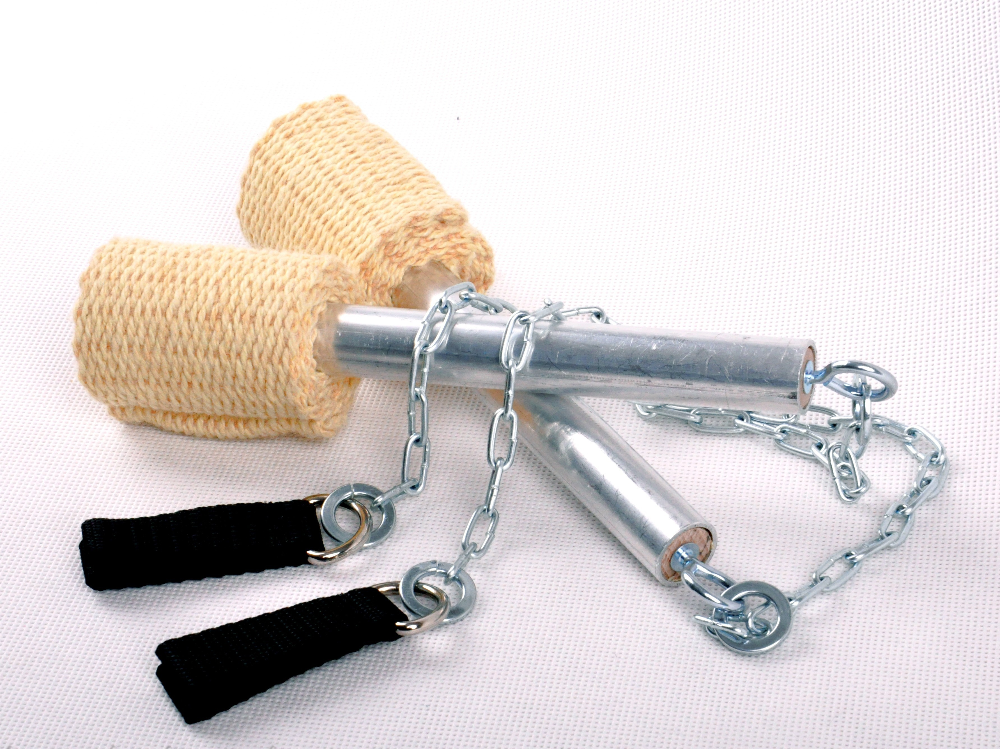

Ogniowe poi to kule na łańcuchach. Na jednym z końców łańcucha jest uchwyt, a na drugim materiał, który się podpala. Zazwyczaj kręci się parą poi. Większość trików opiera się na 3-bitówce. Z ogniem efektownie wyglądają flowery. W dziale poi czasem można znaleźć poiko-pałki. Różnią się od normalnych, tym że na łańcuchu jest kijek z materiałem. Cudowny efekt można otrzymać również dzięki ledowym poi.
|
 |
 |
|---|